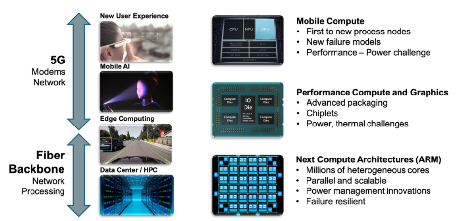
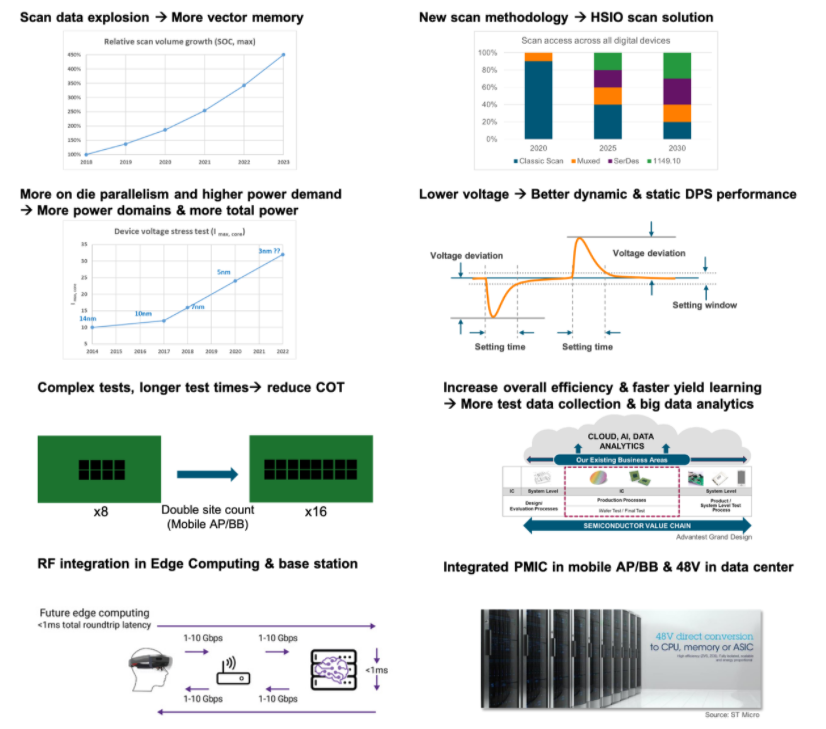
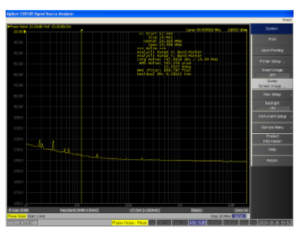
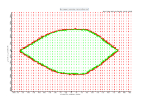
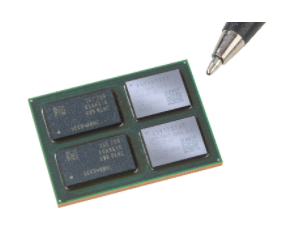

By Matthias Stahl, Business Development Manager, Advantest.
We are currently in the midst of the age of convergence – that is, the convergence of data from a range of applications and data sources. These sources constitute anything that creates data – ranging from human-created data, such as voice and video, through automotive, mobile, and wireless/IoT devices. This also includes edge computing and servers storing the massive amounts of data needed for high-performance computing (HPC), AI, machine learning and many other applications.
This data must be processed, and that is where the age of convergence also becomes the age of exascale computing. The term refers to a supercomputer capable of calculating at least 1018 floating point operations per second. Currently, no single exascale computer exists, but the combined compute power available certainly exceeds this number. Figure 1 illustrates the parallels between data source and processing convergence that we are witnessing, with the chips and technologies that are being made for mobile, performance and next-generation computing – all of which have unique testing requirements.
Figure 1. The age of data convergence has given rise to the age of exascale computing
The V93000 platform has been used successfully for HPC test since its introduction in 1999. It became part of Advantest with the acquisition of Verigy in 2011, and we’ve continually added new capabilities that have enabled us to keep pace with customers’ HPC needs. Figure 2 shows that many diverse drivers are creating the need for these new capabilities.
Figure 2. Exascale computing creates new ATE requirements.
As transistor count increases with smaller nodes, scan data volume goes up as well. This creates the need for deeper memory, faster scan, and new methodologies. At the same time, as device nodes continue to shrink, power-supply requirements escalate – not just power as such but also power dynamics. For example, devices require power supplies that can accommodate fast switching with no glitches, providing stable and consistent performance.
Concurrently, multisite testing demand will increase, with the industry looking to keep test costs in line. Another trend is the integration of RF capabilities into many devices, requiring a test platform that can accommodate the full range of RF and digital test. Today, we already have power management ICs (PMICs) close to the CPU, and we will see more uses going forward for data center applications, creating high-voltage test requirements.
Bringing test into the exascale age
The new EXA Scale™ Generation of the V93000 (Figure 3) addresses these challenges with advancements to the proven V93000 architecture, designed to enable new test methodologies. Initially targeted at advanced digital ICs up to the exascale performance class and RF devices, more applications like MCU or automotive device test will be added. The system is designed to provide superior processing power for massive test data, as well as the highest possible currents and up to 256 power channels per card. The tester and handler can be tightly integrated, which, when combined with the tester’s active thermal control, allows the test cell to offer superior thermal control overall.
Figure 3. The V93000 EXA Scale features powerful processing capabilities in a compact footprint.
Four key innovations enable the newest V93000 tester to deliver exascale-level performance: Xtreme Link; new test heads; and a new universal digital and power supply card (Pin Scale 5000 and DC Scale XPS256 DPS, respectively) for lower cost of test and faster time to market.
Xtreme Link
The V93000 EXA Scale incorporates Xtreme Link, our specialized ATE network with edge computing capabilities. Rather than using off-the-shelf technology like Gigabit Ethernet, we created dedicated technology with an optimized protocol focused on test needs and requirements for high throughput and large test data handling. Figure 4 illustrates the structure and benefits of this network.
Figure 4. Xtreme Link technology enables massive scalability and flexibility for the V39000 EXA Scale.
Pin Scale 5000
The Pin Scale 5000 is a new digital instrument created to set a new ATE standard for scan test. The fastest general-purpose ATE pin on the market, it offers 256 pins running at 5000Mbps maximum speed, scan result capture at up to 5000Mbps, and <1.5ps RMS jitter for accurate reference clocks. The Pin Scale 5000 also features the deepest vector memory available, with 3.5G gigavector (GVec) scan per pin, or 28GVec scan per 8 pins using pooling and fan-out technology. It’s designed to enable all scan implementations, including parallel, multiplexed and HSIO scan, and its configuration flexibility supports high site count – this allows customers to speed their overall test time by performing parallel core test.
Figures 5 and 6 provide examples of the superior measurement and performance capabilities that the card enables.
Figure 5. Pin Scale 5000 phase noise measurement example. The RMS jitter is just 0.9ps, well below the specified 1.5ps.
*Figure 6. Pin Scale 5000 receiver performance at 5Gbit differential. Even at top speed still 55% height and 75% width. *
DC Scale XPS256
The XPS256 combines the best capabilities of several predecessor Advantest instruments. It features many pins with small currents (256 pins x 1A), and it can gang those resources to achieve high current as needed. Combining these capabilities in one DPS allows the XPS256 to offer optimal flexibility and utilization of resources, in a common configuration well suited for 5G, mobile and HPC/AI applications. In addition, its improved accuracy and dynamic response enable achievement of higher yields.
The XPS256 power supply covers wide-ranging current requirements, implementing unlimited ganging to scale from milliamps (mA) to thousands of Amps with no performance degradation. Combining three instruments in a single power supply, the DPS pin delivers best-in-class flexibility, accuracy (±150µV) and dynamic response, with full four-quadrant voltage-current (VI) capabilities and very small overshoot/undershoot, and provides zero-overhead simultaneous voltage and current monitoring.
A unique feature of the XPS256 is its built-in probe needle protection. With individual needles connected to separate power supply pins, currents can be limited to 1A or less per needle. An ultra-fast (<1 µs) hardware clamp allows current to be limited and shut down almost immediately if needed.
Both the Pin Scale 5000 and the XPS256 utilize Advantest’s unique next-generation multicore test processor. The processor is packaged using 2.5D integration, with two 8 core die, and two memory chips, providing 16 fully independent pins in a very small form factor.
*Figure 7. Test processor and memory for 16 channels. *
New test heads
Three new extended test heads developed for the EXA Scale generation tester offer superior configuration scaling from engineering to high multisite applications: the V93000-CX with 9 universal slots, the V93000-SX with 18 universal slots, and the V93000-LX with 27 universal slots. All feature a “zero footprint” design – all electronics are integrated into the test head, eliminating the need for a separate rack. Together, the new test heads cover all application segments and a wide price range, while their enhanced infrastructure helps contribute to lower cost of ownership for customers.
Platform compatibility facilitates transition
The EXA Scale generation of the V93000 platform is compatible with the Smart Scale generation. Smart Scale cards will work with EXA Scale, the load board dimensions are compatible for ease of migration between the systems, and the EXA Scale system can run both the SmarTest 7 and SmarTest 8 versions of our ATE programming environment. This will allow customers the ability to select the V93000 configuration that best meets their product and application requirements.
To date, we have already shipped a significant number of V93000 EXA Scale systems, both for engineering and high-volume production, to multiple customers. We look forward to sharing further successes as the age of exascale computing speeds forward.





